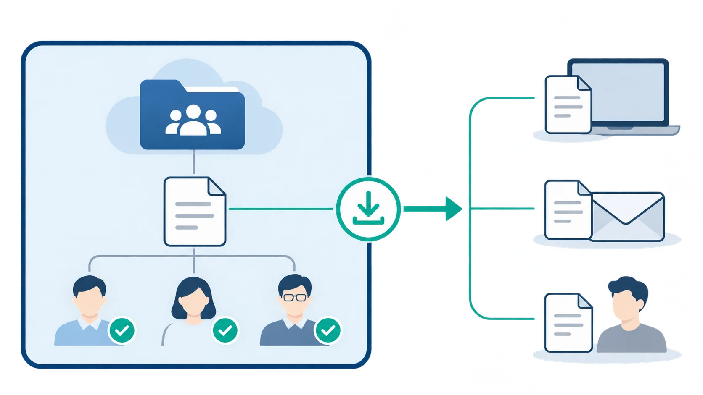

Article · 飞函
Article · 飞函
文件下载后，网盘权限还能管到哪里？
项目负责人把一份报价表放进共享空间，只允许项目组成员查看。成员下载后，又将文件作为邮件附件发给外部合作方。此时，管理员收回他在网盘中的权限，能否阻止合作方继续打开那份附件？
答案取决于文件现在在哪里。**网盘权限管理的是平台内的访问关系，不能自动等同于对所有下载副本的持续控制。**收回权限可以阻止相关成员继续通过网盘访问原文件；已经进入本地设备、邮件或其他系统的副本，则进入了新的管理范围。若企业把两者当成同一件事，就容易误以为“权限已收回，文件也已收回”。
先把文件的两段流转分开
第一段发生在网盘内：谁能找到文件、打开文件，以及共享关系何时结束。这一段可以通过成员或部门权限、定期检查共享范围等方式管理。
第二段从下载开始：文件可能被改名、复制、转发，甚至再次上传到别的系统。原网盘中的权限变更通常不会随副本一起传递。即便能查到平台内的操作记录，也不能据此断定文件在平台外没有继续流转。

这条边界并不意味着网盘权限作用有限。它能减少不必要的接触，让文件在协作阶段有明确的访问范围；企业还需要为下载后的使用指定规则和责任人。
按文件用途决定下一步怎么管
对于日常协作材料，可以先明确共享空间的负责人、可访问的成员或部门，以及项目结束后的权限清理时间。飞函网盘的共享空间和按成员、部门分配共享权限，可用于落实平台内的访问范围。设置权限时，最好让负责人说清楚“谁因什么工作需要访问”，避免项目结束后仍保留宽泛共享。
对于报价、设计稿等下载后可能继续分发的文件，还应回答三个问题：谁可以将文件带出网盘？带出后允许交给谁？发现误传时由谁联系接收方并处理副本？这些属于业务流程、终端与其他系统共同承担的管理事项，不能只靠网盘中的一次授权完成。
如果文件确实需要交给外部人员，负责人可以事先确认交付渠道、接收对象和所需版本，并记录交付动作。这样发生版本争议或误发时，团队知道该找谁核对，而不是只检查网盘里当前有哪些人有权限。
用“收回权限”触发后续动作
项目成员离岗或合作结束时，收回网盘权限是必要的一步。与此同时，负责人还应核对该成员是否下载过需要回收的材料、是否通过其他渠道交付过副本，并按企业既定流程处理本地和外部副本。对已发出的文件，能否删除、撤回或限制使用，要看接收渠道、设备和双方约定，不能把网盘操作当作结果保证。
企业可以把边界写进日常规则：**平台内访问由网盘权限管理；下载后的副本由文件负责人、使用者及相应交付流程继续管理。**边界说清楚，权限配置才不会被赋予它无法兑现的承诺，文件流转中的责任也更容易落实。